Tidy Tuesday - Marble Racing
Marble Racing Analysis Exercise
In this exercise, I will be analyzing data from marble racing! An overview for the racing can be found here, but as a quick heads up - there is some not safe for work language in the video!
Setup
The first thing I need to do is actually load the data and set up some other basic things for the analysis such as package loading and document settings.
# Package loading
library(tidyverse)
library(tidymodels)
library(gtsummary)
library(ranger)
library(kernlab)##
## Attaching package: 'kernlab'## The following object is masked from 'package:scales':
##
## alpha## The following object is masked from 'package:purrr':
##
## cross## The following object is masked from 'package:ggplot2':
##
## alphalibrary(earth)## Loading required package: Formula## Loading required package: plotmo## Loading required package: plotrix##
## Attaching package: 'plotrix'## The following object is masked from 'package:scales':
##
## rescale## Loading required package: TeachingDemos# Document settings
here::here() #set paths ## [1] "/Users/savannahhammerton/Desktop/GitHub/MADA/SAVANNAHHAMMERTON-MADA-portfolio"ggplot2::theme_set(theme_light()) #set plot themes
knitr::opts_chunk$set(echo = TRUE, message = FALSE, warning = FALSE) #document chunk settings
# Load data and set to object
marbles <- readr::read_csv(
'https://raw.githubusercontent.com/rfordatascience/tidytuesday/master/data/2020/2020-06-02/marbles.csv'
)## Rows: 256 Columns: 14## ── Column specification ────────────────────────────────────────────────────────
## Delimiter: ","
## chr (9): date, race, site, source, marble_name, team_name, pole, host, notes
## dbl (5): time_s, points, track_length_m, number_laps, avg_time_lap##
## ℹ Use `spec()` to retrieve the full column specification for this data.
## ℹ Specify the column types or set `show_col_types = FALSE` to quiet this message.Processing
Now that I have everything ready to go, I can start exploring the data! To start off easy, I’ll use the glimpse() function to see some variable information.
glimpse(marbles)## Rows: 256
## Columns: 14
## $ date <chr> "15-Feb-20", "15-Feb-20", "15-Feb-20", "15-Feb-20", "15…
## $ race <chr> "S1Q1", "S1Q1", "S1Q1", "S1Q1", "S1Q1", "S1Q1", "S1Q1",…
## $ site <chr> "Savage Speedway", "Savage Speedway", "Savage Speedway"…
## $ source <chr> "https://youtu.be/JtsQ_UydjEI?t=356", "https://youtu.be…
## $ marble_name <chr> "Clementin", "Starry", "Momo", "Yellow", "Snowy", "Razz…
## $ team_name <chr> "O'rangers", "Team Galactic", "Team Momo", "Mellow Yell…
## $ time_s <dbl> 28.11, 28.37, 28.40, 28.70, 28.71, 28.72, 28.96, 29.11,…
## $ pole <chr> "P1", "P2", "P3", "P4", "P5", "P6", "P7", "P8", "P9", "…
## $ points <dbl> NA, NA, NA, NA, NA, NA, NA, NA, NA, NA, NA, NA, NA, NA,…
## $ track_length_m <dbl> 12.81, 12.81, 12.81, 12.81, 12.81, 12.81, 12.81, 12.81,…
## $ number_laps <dbl> 1, 1, 1, 1, 1, 1, 1, 1, 1, 1, 1, 1, 1, 1, 1, 1, 10, 10,…
## $ avg_time_lap <dbl> 28.11, 28.37, 28.40, 28.70, 28.71, 28.72, 28.96, 29.11,…
## $ host <chr> "No", "No", "No", "No", "No", "No", "No", "No", "No", "…
## $ notes <chr> NA, NA, NA, NA, NA, NA, NA, NA, NA, NA, NA, NA, NA, NA,…Right off the bat, I see some things I’d like to fix, and some I have questions about. For instance, I can change the date variable to an actual date data type, and can probably change the host variable to a factor (I just need to make sure the only options are “Yes” and “No”). I might be able to do the same to pole and site. There are also a couple of variables that, at least in the first few observations, are all NAs. If there doesn’t seem to be much information in those, I’ll go ahead and remove them.
# Check host variable responses
print(unique(marbles$host))## [1] "No" "Yes"# Just yes and no - I will change this to a factor
# Check site variables responses
print(unique(marbles$site))## [1] "Savage Speedway" "O'raceway" "Momotorway" "Hivedrive"
## [5] "Greenstone" "Short Circuit" "Razzway" "Midnight Bay"# I will make this a factor as well
# Check pole variable responses
print(unique(marbles$pole))## [1] "P1" "P2" "P3" "P4" "P5" "P6" "P7" "P8" "P9" "P10" "P11" "P12"
## [13] "P13" "P14" "P15" "P16" NA# This includes some missing data - I need to see how much
# This is probably a good time to check missing data for the whole data set
naniar::vis_miss(marbles)
# Check points variable responses
print(unique(marbles$points))## [1] NA 25 18 15 12 11 8 6 4 2 1 0 26 10 13 19 16I’m not sure what’s going on with the points and poles variables. Only one of them seems to be present at a time, but the responses are not the same. I’m going to just remove both of those variables from the set, as well as the notes variable. It seems like the source variable is also just the link to the Youtube video of the race, so I might as well get rid of that as well. I will then make the other changes mentioned above, and remove the few observations that are missing time information.
# Make previously decided changes to data set
marbles.2 <- marbles %>%
select(!c(pole, points, notes, source)) %>%
mutate(
date = lubridate::dmy(date),
host = as_factor(host),
site = as_factor(site),
race = as_factor(race),
) %>%
drop_na()
# Check new object
glimpse(marbles.2)## Rows: 253
## Columns: 10
## $ date <date> 2020-02-15, 2020-02-15, 2020-02-15, 2020-02-15, 2020-0…
## $ race <fct> S1Q1, S1Q1, S1Q1, S1Q1, S1Q1, S1Q1, S1Q1, S1Q1, S1Q1, S…
## $ site <fct> Savage Speedway, Savage Speedway, Savage Speedway, Sava…
## $ marble_name <chr> "Clementin", "Starry", "Momo", "Yellow", "Snowy", "Razz…
## $ team_name <chr> "O'rangers", "Team Galactic", "Team Momo", "Mellow Yell…
## $ time_s <dbl> 28.11, 28.37, 28.40, 28.70, 28.71, 28.72, 28.96, 29.11,…
## $ track_length_m <dbl> 12.81, 12.81, 12.81, 12.81, 12.81, 12.81, 12.81, 12.81,…
## $ number_laps <dbl> 1, 1, 1, 1, 1, 1, 1, 1, 1, 1, 1, 1, 1, 1, 1, 1, 10, 10,…
## $ avg_time_lap <dbl> 28.11, 28.37, 28.40, 28.70, 28.71, 28.72, 28.96, 29.11,…
## $ host <fct> No, No, No, No, No, No, No, No, No, No, No, No, No, No,…This is much better! Now I can begin doing some exploration of the information in this data set.
Exploratory Data Analysis
First, I want to get an idea of the information contained here, other than things like team name, marble name, etc., so I’m going to create a summary table to see it all.
# Create summary table with only variables of interest
marbles.2 %>%
select(!c(race, site, marble_name, team_name, host)) %>% #remove unneeded variables
gtsummary::tbl_summary()| Characteristic | N = 2531 |
|---|---|
| date | 2020-02-15 to 2020-04-05 |
| time_s | 36 (28, 338) |
| track_length_m | |
| 11.9 | 31 (12%) |
| 12.05 | 32 (13%) |
| 12.81 | 32 (13%) |
| 12.84 | 32 (13%) |
| 13.2 | 31 (12%) |
| 14.05 | 31 (12%) |
| 14.38 | 32 (13%) |
| 14.55 | 32 (13%) |
| number_laps | |
| 1 | 128 (51%) |
| 9 | 31 (12%) |
| 10 | 32 (13%) |
| 11 | 15 (5.9%) |
| 13 | 16 (6.3%) |
| 14 | 15 (5.9%) |
| 16 | 16 (6.3%) |
| avg_time_lap | 30 (26, 34) |
|
1
Range; Median (IQR); n (%)
|
|
There’s a pretty big range in lap number, so I can tell that just looking at the overall time in seconds is not going to tell much. I’ll need to rely more on the average time per lap, or create another variable to examine results.
For now, I’m going to look at the average lap time. First I’ll look at the distribution of this information overall, and then see if there are any apparent differences by team.
# Create histogram of averagee lap time
ggplot(data = marbles.2, aes(x = avg_time_lap)) +
geom_histogram()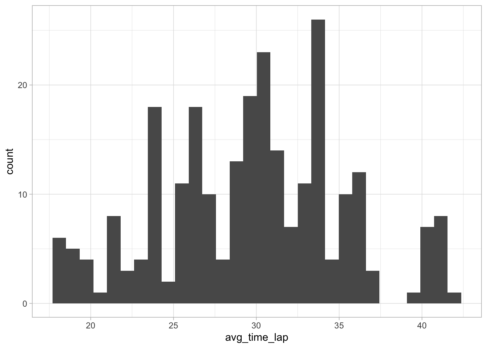
This appears almost normal, but not quite - the peak around 34 gives it the appearance of some right skewness. I’ll do a histogram with a log transformation just to be sure.
# Create histogram of log avereage lap time
ggplot(data = marbles.2, aes(x = log(avg_time_lap))) +
geom_histogram()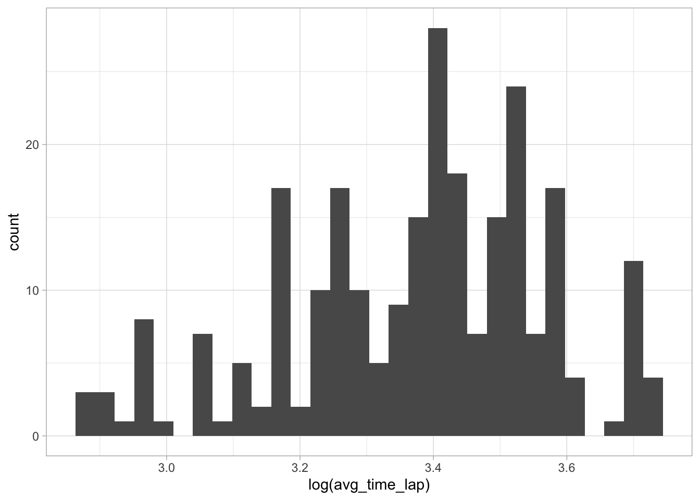
This looks about the same as the histogram of the untransformed variable, so I’m going to assume the skewness isn’t enough to make a big impact.
# Create boxplot of average lap times in teams
ggplot(data = marbles.2, aes(x = avg_time_lap, fill = team_name)) +
geom_boxplot()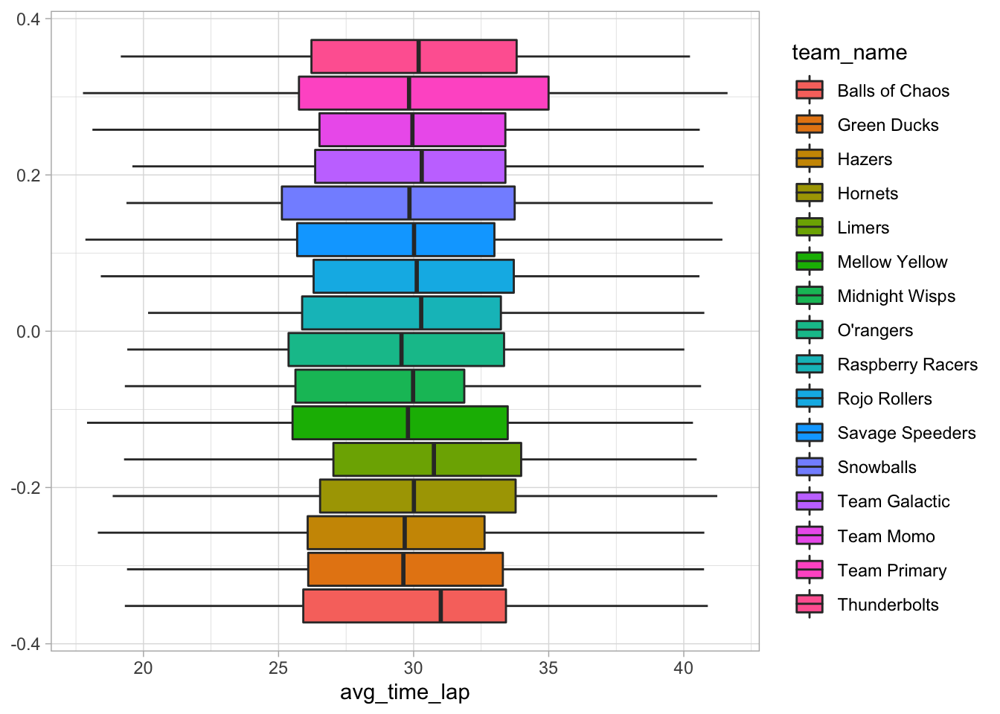
There don’t seem to be any big differences between teams. I’ll try to look at the same thing, but by marble names.
# Create boxplot of average lap times in marbles
ggplot(data = marbles.2, aes(x = avg_time_lap, fill = marble_name)) +
geom_boxplot()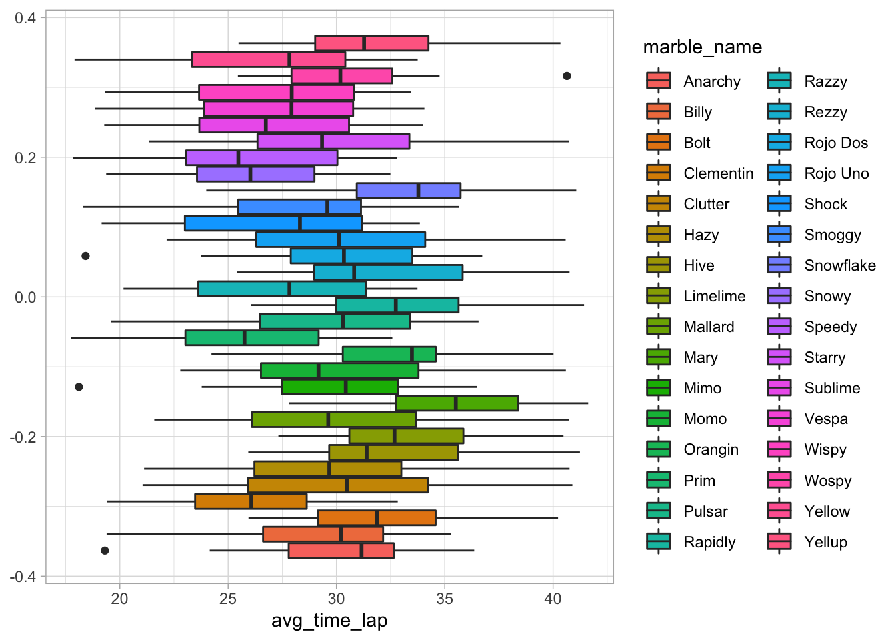
Interestingly, there do seem to be some differences here. Namely, Mary seems to have longer lap times and Clementin seems to have shorter lap times.
I want to do a very quick analysis to see there is any statistical indicator of differences in average lap time between the marbles.
# Fit average lap time to marbles
marble_fit <- lm(avg_time_lap ~ marble_name, data = marbles.2)
# Present results
knitr::kable(broom::tidy(marble_fit, conf.int = TRUE))| term | estimate | std.error | statistic | p.value | conf.low | conf.high |
|---|---|---|---|---|---|---|
| (Intercept) | 29.616250 | 1.876899 | 15.7793502 | 0.0000000 | 25.917339 | 33.315161 |
| marble_nameBilly | -0.630000 | 2.654336 | -0.2373475 | 0.8126071 | -5.861050 | 4.601050 |
| marble_nameBolt | 2.437500 | 2.654336 | 0.9183086 | 0.3594584 | -2.793550 | 7.668550 |
| marble_nameClementin | -3.513750 | 2.654336 | -1.3237772 | 0.1869447 | -8.744800 | 1.717300 |
| marble_nameClutter | 0.891250 | 2.654336 | 0.3357713 | 0.7373619 | -4.339800 | 6.122300 |
| marble_nameHazy | 0.465000 | 2.654336 | 0.1751850 | 0.8610946 | -4.766050 | 5.696050 |
| marble_nameHive | 2.858750 | 2.654336 | 1.0770112 | 0.2826495 | -2.372300 | 8.089800 |
| marble_nameLimelime | 3.528750 | 2.654336 | 1.3294284 | 0.1850774 | -1.702300 | 8.759800 |
| marble_nameMallard | 0.593750 | 2.654336 | 0.2236906 | 0.8232047 | -4.637300 | 5.824800 |
| marble_nameMary | 5.696607 | 2.747499 | 2.0733791 | 0.0392962 | 0.281956 | 11.111258 |
| marble_nameMimo | -0.375000 | 2.654336 | -0.1412783 | 0.8877788 | -5.606050 | 4.856050 |
| marble_nameMomo | 0.580000 | 2.654336 | 0.2185104 | 0.8272331 | -4.651050 | 5.811050 |
| marble_nameOrangin | 3.073750 | 2.654336 | 1.1580107 | 0.2481096 | -2.157300 | 8.304800 |
| marble_namePrim | -3.947500 | 2.654336 | -1.4871891 | 0.1383902 | -9.178550 | 1.283550 |
| marble_namePulsar | -0.247500 | 2.654336 | -0.0932436 | 0.9257945 | -5.478550 | 4.983550 |
| marble_nameRapidly | 3.323750 | 2.654336 | 1.2521963 | 0.2118219 | -1.907300 | 8.554800 |
| marble_nameRazzy | -2.103750 | 2.654336 | -0.7925710 | 0.4288778 | -7.334800 | 3.127300 |
| marble_nameRezzy | 2.340000 | 2.654336 | 0.8815763 | 0.3789638 | -2.891050 | 7.571050 |
| marble_nameRojo Dos | -0.108750 | 2.654336 | -0.0409707 | 0.9673562 | -5.339800 | 5.122300 |
| marble_nameRojo Uno | 0.905000 | 2.654336 | 0.3409515 | 0.7334640 | -4.326050 | 6.136050 |
| marble_nameShock | -2.283750 | 2.654336 | -0.8603846 | 0.3905095 | -7.514800 | 2.947300 |
| marble_nameSmoggy | -1.295000 | 2.654336 | -0.4878809 | 0.6261179 | -6.526050 | 3.936050 |
| marble_nameSnowflake | 3.575000 | 2.654336 | 1.3468527 | 0.1794072 | -1.656050 | 8.806050 |
| marble_nameSnowy | -3.436250 | 2.654336 | -1.2945797 | 0.1968162 | -8.667300 | 1.794800 |
| marble_nameSpeedy | -3.683750 | 2.654336 | -1.3878234 | 0.1665884 | -8.914800 | 1.547300 |
| marble_nameStarry | 0.606250 | 2.654336 | 0.2283998 | 0.8195466 | -4.624800 | 5.837300 |
| marble_nameSublime | -2.684821 | 2.747499 | -0.9771874 | 0.3295448 | -8.099473 | 2.729830 |
| marble_nameVespa | -2.126250 | 2.654336 | -0.8010477 | 0.4239644 | -7.357300 | 3.104800 |
| marble_nameWispy | -2.272500 | 2.654336 | -0.8561462 | 0.3928442 | -7.503550 | 2.958550 |
| marble_nameWospy | 1.423750 | 2.747499 | 0.5181985 | 0.6048382 | -3.990901 | 6.838401 |
| marble_nameYellow | -2.607500 | 2.654336 | -0.9823548 | 0.3269993 | -7.838550 | 2.623550 |
| marble_nameYellup | 2.115000 | 2.654336 | 0.7968093 | 0.4264169 | -3.116050 | 7.346050 |
# View other results
glance(marble_fit)## # A tibble: 1 × 12
## r.squared adj.r.squared sigma statistic p.value df logLik AIC BIC
## <dbl> <dbl> <dbl> <dbl> <dbl> <dbl> <dbl> <dbl> <dbl>
## 1 0.197 0.0841 5.31 1.75 0.0118 31 -764. 1594. 1711.
## # … with 3 more variables: deviance <dbl>, df.residual <int>, nobs <int>These results show about what I expected - there are some slight differences between marbles, but nothing major. The adjusted R-squared shows a very small amount of variability in average lap time being explained by the different marbles.
This seems like a good time to add a variable with the winners of the race (I was really surprised that there wasn’t one to begin with). I’m going to base it off of the time_svariable. While I couldn’t use that variable to tell much overall (due to the different laps and track lengths), if I group the race, I think it should be the best way to tell who won.
# Create winner variable
marbles.3 <- marbles.2 %>%
group_by(race) %>%
mutate(
place = rank(-time_s),
winner = (place == 1))
# Check object info
glimpse(marbles.3)## Rows: 253
## Columns: 12
## Groups: race [16]
## $ date <date> 2020-02-15, 2020-02-15, 2020-02-15, 2020-02-15, 2020-0…
## $ race <fct> S1Q1, S1Q1, S1Q1, S1Q1, S1Q1, S1Q1, S1Q1, S1Q1, S1Q1, S…
## $ site <fct> Savage Speedway, Savage Speedway, Savage Speedway, Sava…
## $ marble_name <chr> "Clementin", "Starry", "Momo", "Yellow", "Snowy", "Razz…
## $ team_name <chr> "O'rangers", "Team Galactic", "Team Momo", "Mellow Yell…
## $ time_s <dbl> 28.11, 28.37, 28.40, 28.70, 28.71, 28.72, 28.96, 29.11,…
## $ track_length_m <dbl> 12.81, 12.81, 12.81, 12.81, 12.81, 12.81, 12.81, 12.81,…
## $ number_laps <dbl> 1, 1, 1, 1, 1, 1, 1, 1, 1, 1, 1, 1, 1, 1, 1, 1, 10, 10,…
## $ avg_time_lap <dbl> 28.11, 28.37, 28.40, 28.70, 28.71, 28.72, 28.96, 29.11,…
## $ host <fct> No, No, No, No, No, No, No, No, No, No, No, No, No, No,…
## $ place <dbl> 16, 15, 14, 13, 12, 11, 10, 9, 8, 7, 6, 5, 4, 3, 2, 1, …
## $ winner <lgl> FALSE, FALSE, FALSE, FALSE, FALSE, FALSE, FALSE, FALSE,…Ok, now that I have this information, I think I’ll use place as my main outcome. However, I still want to do some exploration of other variables.
I’d like to see if factors like date, race, and site impacted the average lap times. Let’s start with date.
# Visualize average lap timese by date
ggplot(data = marbles.3, aes(x = date, y = avg_time_lap)) +
geom_point() +
geom_smooth()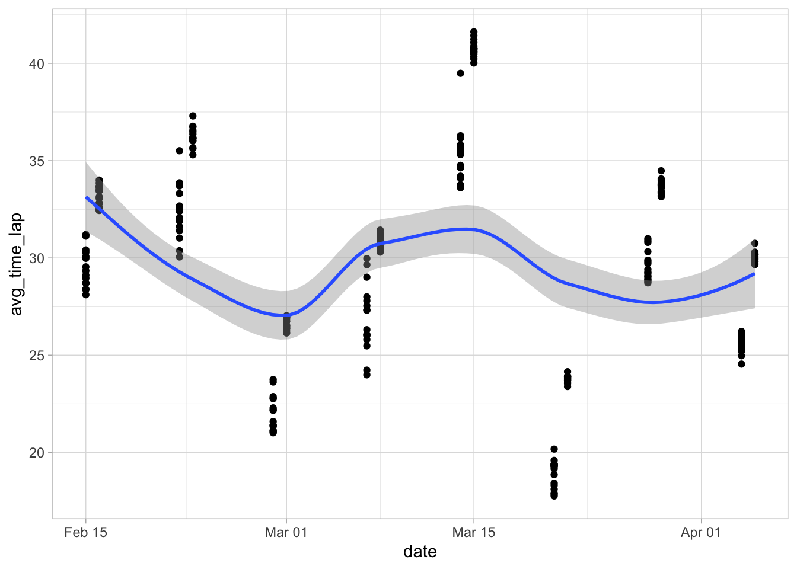
Hmm, that doesn’t seem like much of anything. However, I remember that the times didn’t seem quite normally distributed, so let me try transforming that variable just to be sure.
# Visualize log averagee lap times by date
ggplot(data = marbles.3, aes(x = date, y = log(avg_time_lap))) +
geom_point() +
geom_smooth()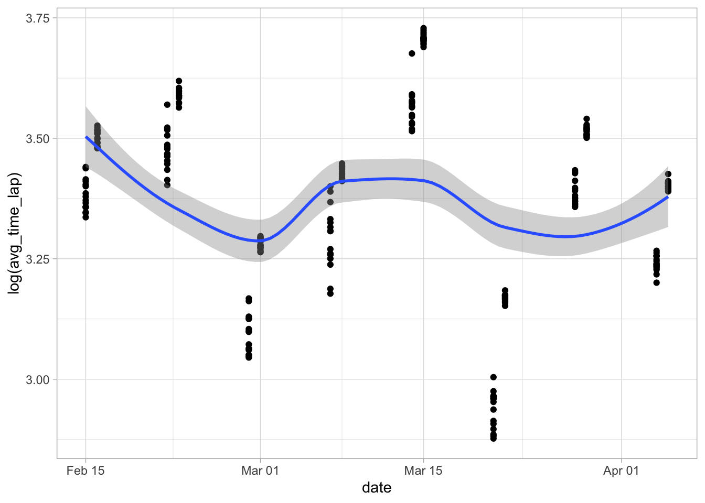
That doesn’t look very different at all, which probably means the data is close enough to a normal distribution that it doesn’t make much of a difference.
It doesn’t look like data impacts lap time much. Next, let’s try by race.
# Visualize average lap times by race
ggplot(data = marbles.3, aes(x = race, y = avg_time_lap)) +
geom_point() +
theme(axis.text.x = element_text(angle = 45))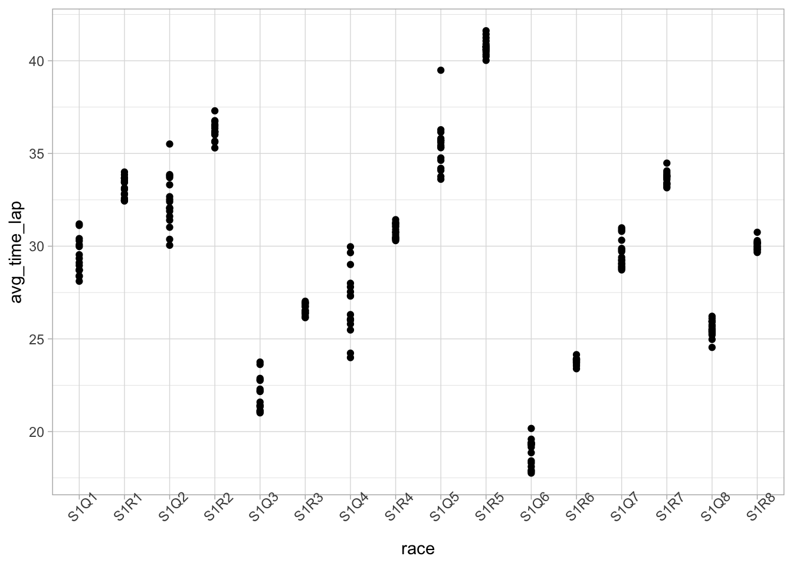
This is kind of interesting, in that it seems almost cyclical, but I don’t know enough about the different races to have any idea about why that could be. Maybe it has to do with number of laps? Let’s check that.
# Visualize average lap time by race, broken down by number of laps
ggplot(data = marbles.3, aes(x = race, y = avg_time_lap)) +
geom_point() +
theme(axis.text.x = element_text(angle = 45)) +
facet_wrap(vars(number_laps))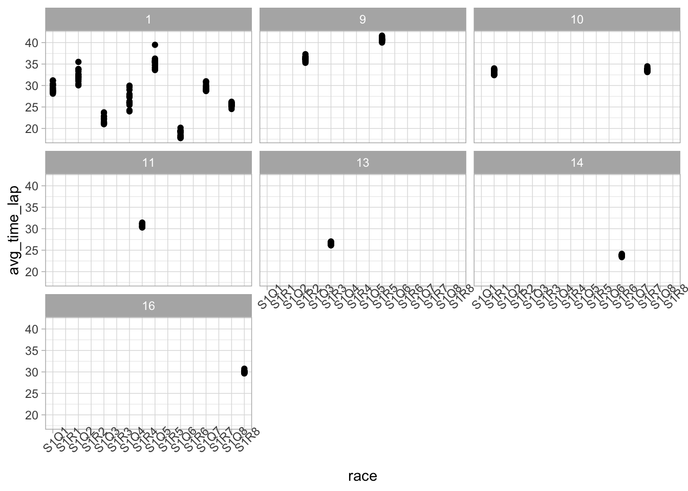
It’s a little difficult to make any big assumptions based off this, but I don’ see any reason to believe that the number of laps is really influencing the average lap time.
Let’s see if site made any impact.
# Visualize average lap time by site
ggplot(data = marbles.3, aes(x = avg_time_lap, fill = site)) +
geom_boxplot()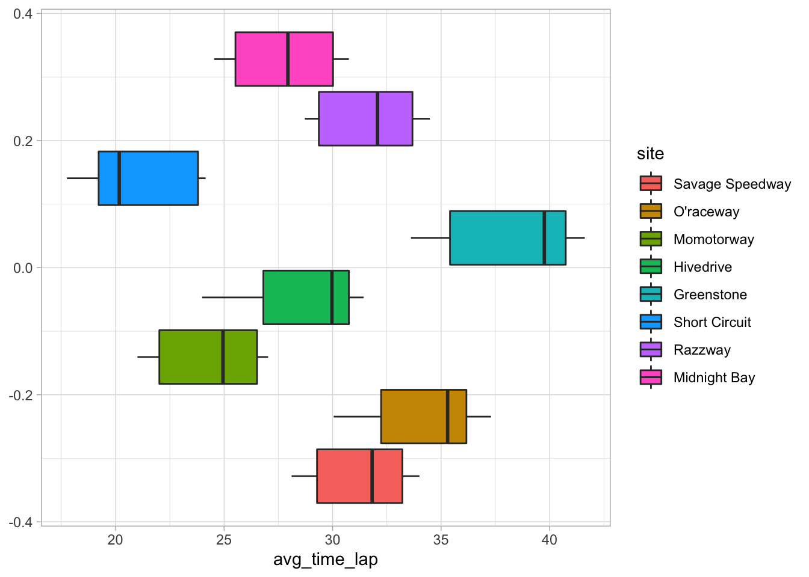
Well, there are definitely differences here. I’m guessing that maybe some of these differences are due to different race setups/track types, as the video showed a variety of tracks, but there’s nothing in the data to explain this.
Now I want to see if any of the teams tended to perform better or worse in the race placing.
# Visualize diffent teams' race placing
ggplot(data = marbles.3, aes(x = place, fill = team_name)) +
geom_boxplot() 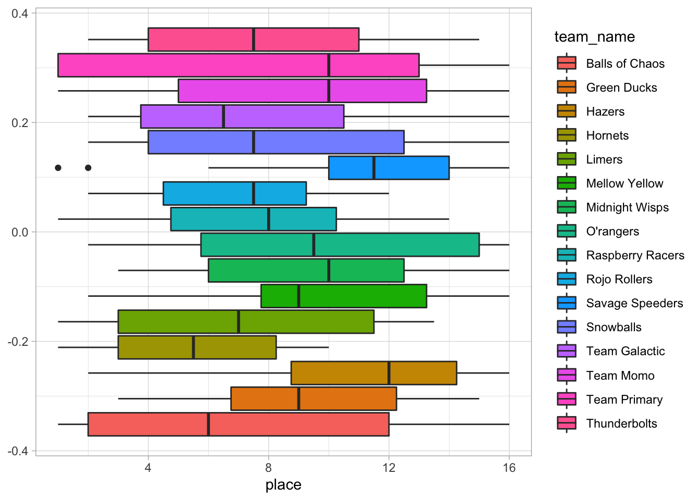
It seems like the Savage Speeders were not so savage or speedy. The Hazers didn’t appear to do great either.
I’ll now do the same thing with marble name.
# Visualize different marbles' race placing
ggplot(data = marbles.3, aes(x = place, fill = marble_name)) +
geom_boxplot() 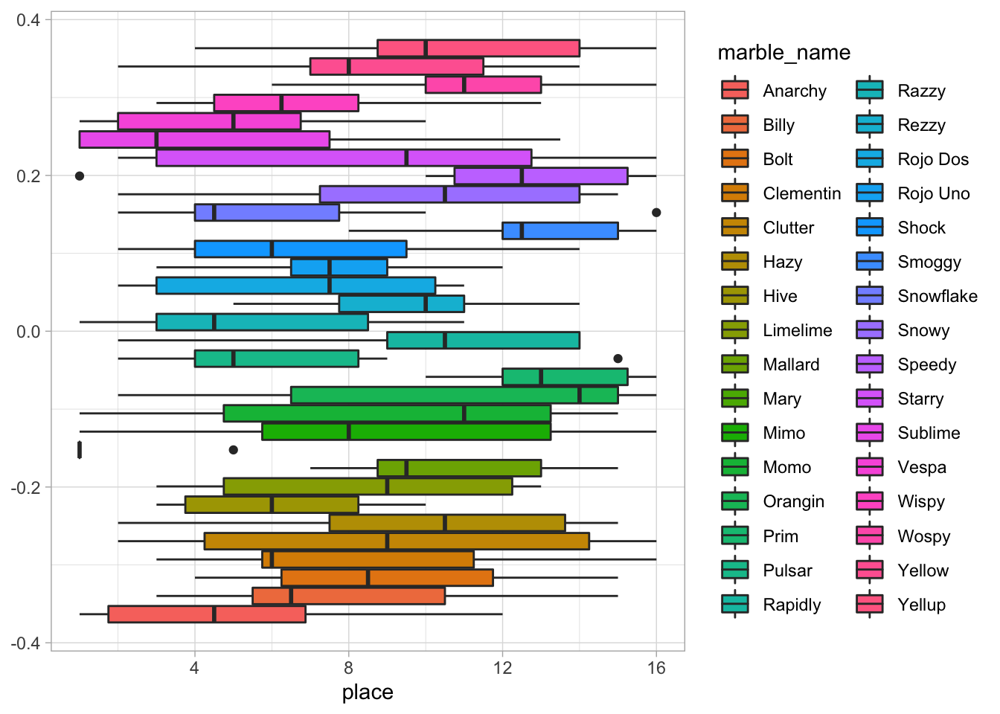
There are actually _all_sorts of differences here. I’m going to do a quick analysis to confirm this.
# Fit marbles to race placing
place_fit <- lm(place ~ marble_name, data = marbles.3)
# Present results
knitr::kable(tidy(place_fit, conf.int = TRUE))| term | estimate | std.error | statistic | p.value | conf.low | conf.high |
|---|---|---|---|---|---|---|
| (Intercept) | 4.9375000 | 1.453880 | 3.3960858 | 0.0008104 | 2.0722575 | 7.802742 |
| marble_nameBilly | 2.9375000 | 2.056096 | 1.4286782 | 0.1545086 | -1.1145647 | 6.989565 |
| marble_nameBolt | 4.0625000 | 2.056096 | 1.9758316 | 0.0494180 | 0.0104353 | 8.114565 |
| marble_nameClementin | 3.1875000 | 2.056096 | 1.5502678 | 0.1225081 | -0.8645647 | 7.239565 |
| marble_nameClutter | 4.0625000 | 2.056096 | 1.9758316 | 0.0494180 | 0.0104353 | 8.114565 |
| marble_nameHazy | 5.0000000 | 2.056096 | 2.4317927 | 0.0158205 | 0.9479353 | 9.052065 |
| marble_nameHive | 1.1875000 | 2.056096 | 0.5775508 | 0.5641554 | -2.8645647 | 5.239565 |
| marble_nameLimelime | 3.5625000 | 2.056096 | 1.7326523 | 0.0845525 | -0.4895647 | 7.614565 |
| marble_nameMallard | 5.5625000 | 2.056096 | 2.7053694 | 0.0073548 | 1.5104353 | 9.614565 |
| marble_nameMary | -3.3660714 | 2.128262 | -1.5816058 | 0.1151697 | -7.5603569 | 0.828214 |
| marble_nameMimo | 3.9375000 | 2.056096 | 1.9150367 | 0.0567788 | -0.1145647 | 7.989565 |
| marble_nameMomo | 4.3125000 | 2.056096 | 2.0974212 | 0.0370930 | 0.2604353 | 8.364565 |
| marble_nameOrangin | 5.8125000 | 2.056096 | 2.8269590 | 0.0051304 | 1.7604353 | 9.864565 |
| marble_namePrim | 8.4375000 | 2.056096 | 4.1036501 | 0.0000572 | 4.3854353 | 12.489565 |
| marble_namePulsar | 1.5625000 | 2.056096 | 0.7599352 | 0.4481032 | -2.4895647 | 5.614565 |
| marble_nameRapidly | 5.1875000 | 2.056096 | 2.5229849 | 0.0123400 | 1.1354353 | 9.239565 |
| marble_nameRazzy | 0.6875000 | 2.056096 | 0.3343715 | 0.7384163 | -3.3645647 | 4.739565 |
| marble_nameRezzy | 4.5625000 | 2.056096 | 2.2190108 | 0.0275027 | 0.5104353 | 8.614565 |
| marble_nameRojo Dos | 1.9375000 | 2.056096 | 0.9423197 | 0.3470579 | -2.1145647 | 5.989565 |
| marble_nameRojo Uno | 2.5625000 | 2.056096 | 1.2462937 | 0.2139760 | -1.4895647 | 6.614565 |
| marble_nameShock | 2.0625000 | 2.056096 | 1.0031145 | 0.3169027 | -1.9895647 | 6.114565 |
| marble_nameSmoggy | 7.9375000 | 2.056096 | 3.8604709 | 0.0001486 | 3.8854353 | 11.989565 |
| marble_nameSnowflake | 1.5625000 | 2.056096 | 0.7599352 | 0.4481032 | -2.4895647 | 5.614565 |
| marble_nameSnowy | 4.9375000 | 2.056096 | 2.4013953 | 0.0171603 | 0.8854353 | 8.989565 |
| marble_nameSpeedy | 6.8125000 | 2.056096 | 3.3133175 | 0.0010772 | 2.7604353 | 10.864565 |
| marble_nameStarry | 3.8125000 | 2.056096 | 1.8542419 | 0.0650369 | -0.2395647 | 7.864565 |
| marble_nameSublime | -0.0089286 | 2.128262 | -0.0041952 | 0.9966565 | -4.2032140 | 4.185357 |
| marble_nameVespa | 0.0625000 | 2.056096 | 0.0303974 | 0.9757775 | -3.9895647 | 4.114565 |
| marble_nameWispy | 2.0000000 | 2.056096 | 0.9727171 | 0.3317574 | -2.0520647 | 6.052065 |
| marble_nameWospy | 6.3482143 | 2.128262 | 2.9828163 | 0.0031767 | 2.1539288 | 10.542500 |
| marble_nameYellow | 3.8125000 | 2.056096 | 1.8542419 | 0.0650369 | -0.2395647 | 7.864565 |
| marble_nameYellup | 5.6875000 | 2.056096 | 2.7661642 | 0.0061520 | 1.6354353 | 9.739565 |
# View additional model results
glance(place_fit)## # A tibble: 1 × 12
## r.squared adj.r.squared sigma statistic p.value df logLik AIC BIC
## <dbl> <dbl> <dbl> <dbl> <dbl> <dbl> <dbl> <dbl> <dbl>
## 1 0.291 0.191 4.11 2.92 0.00000267 31 -700. 1465. 1582.
## # … with 3 more variables: deviance <dbl>, df.residual <int>, nobs <int>It looks like marble name is (statistically) a predictor of race placing. What does this mean in real life? I’m not sure. Maybe there’s some physical characteristic of the different marbles that allow them to perform better, or maybe the fates favor some marbles over others. 🤷
Question
I’ve seen some interesting things in the exploration of this data. I think what I’m most interested in is the average lap time. I want to see how various factors in the data impact lap time. However, some of the variables in my data set are probably not relevant or useful in this, so I need to finalize my data set by removing these. Specifically, I’m going to get rid of the host and winner variables.
# Finalize dataset with only relevant data
marbles.fin <- marbles.3 %>%
select(!c(host, winner, place, time_s, number_laps))Analysis
It’s time to begin the actual analysis. The first thing I need to is split my final dataset into test and train data. I am also going to go ahead and set up my resample object.
# Set seed to fix random numbers
set.seed(123)
# Put 70% of data into training set
data_split <- initial_split(marbles.fin,
prop = 7/10, #split data set into 70% training, 30% testing
strata = avg_time_lap) #use lap time as stratification
# Create data frames for training and testing sets
train_data <- training(data_split)
test_data <- testing(data_split)
# Create a resample object for the training data; 5x5, stratify on lap time
cv5 <- vfold_cv(train_data,
v = 5,
repeats = 5,
strata = avg_time_lap)I need to decide what models to try with this question. We’ve covered many over this semester, including (but not limited to):
- Polynomial and Spline Models
- CART Models
- Ensemble Models ( i.e. Random Forests)
- Support Vector Machine Models (SVM)
- Discriminant Analysis Models
Now that I know my outcome will be average lap time, which is continuous, my basic model will a linear regression model. The ML models I will fit are:
- Spline
- Tree
- Random Forest
- SVM
I also need to establish how I will evaluate these model fits. I will use the RMSE to do this.
Now, it’s time to set up my recipe.
# Create recipe
lap_rec <- recipe(avg_time_lap ~ ., #lap time outcome, all other predictors
data = train_data) %>%
step_dummy(all_nominal_predictors()) #create dummy variables for all nominal variables With all this set, let’s start with the null model!
Null Model
# Fit null model to train data
null_model <- lm(avg_time_lap ~ 1, data = train_data)
# View results
knitr::kable(tidy(null_model))| term | estimate | std.error | statistic | p.value |
|---|---|---|---|---|
| (Intercept) | 29.67455 | 0.4259133 | 69.67274 | 0 |
# Double checking estimate
mean(train_data$avg_time_lap)## [1] 29.67455# RMSE
null_rmse <- null_model %>%
augment(newdata = train_data) %>%
rmse(truth = avg_time_lap, estimate = .fitted) %>%
mutate(model = 'Null Model')
null_rmse## # A tibble: 1 × 4
## .metric .estimator .estimate model
## <chr> <chr> <dbl> <chr>
## 1 rmse standard 5.63 Null ModelThis is what I expected - the model estimate matches the mean in the train data. I now also have an RMSE to compare the other models to - they should all perform better than this.
Spline Model
Now it’s time for the spline model. I will follow these steps:
- Create model specification
- Create a workflow
- Create a tuning grid
- Tune the hyperparameters
- Autoplot the results
- Finalize the workflow
- Fit the model to the training data
- Estimate model performance with RMSE
- Make diagnostic plots
# Model specs
mars_earth_spec <-
mars(prod_degree = tune()) %>%
set_engine('earth') %>%
set_mode('regression')
# Create workflow
spline_wflow <-
workflow() %>%
add_model(mars_earth_spec) %>%
add_recipe(lap_rec)
# Create a tuning grid
spline_grid <- grid_regular(parameters(mars_earth_spec))
# Tune hyperparameters
spline_res <- spline_wflow %>%
tune_grid(resamples = cv5,
grid = spline_grid,
metrics = metric_set(rmse),
control = control_grid(verbose = T))
# Autoplot results
spline_res %>% autoplot()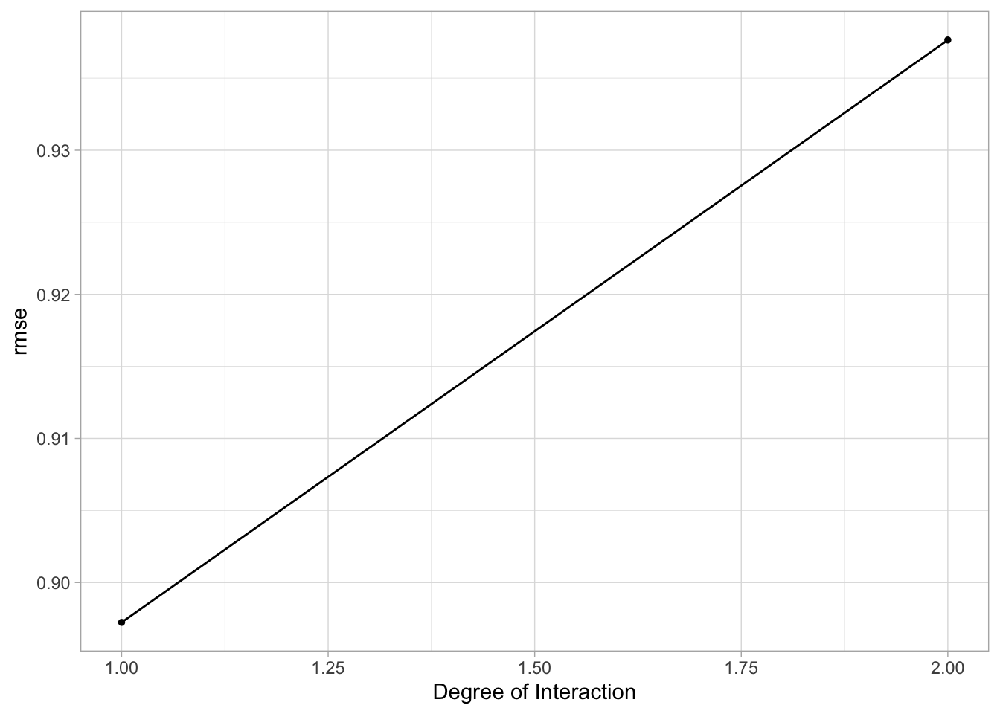
# Finalize workflow
best_spline <- spline_res %>% #choose best hyperparameters
select_best()
best_spline_wflow <- spline_wflow %>% #finalize with chosen hyperparameters
finalize_workflow(best_spline)
# Fit to training data
best_spline_wflow_fit <- best_spline_wflow %>%
fit(data = train_data)
# Estimate model performance with RMSE
aug_best_spline <- augment(best_spline_wflow_fit, new_data = train_data)
spline_rmse <-
aug_best_spline %>%
rmse(truth = avg_time_lap, .pred) %>%
mutate(model = "Spline")
spline_rmse ## # A tibble: 1 × 4
## .metric .estimator .estimate model
## <chr> <chr> <dbl> <chr>
## 1 rmse standard 0.771 Spline# Diagnostic plots
## Plot actual vs predicted
ggplot(data = aug_best_spline, aes(x = .pred, y = avg_time_lap)) +
geom_point()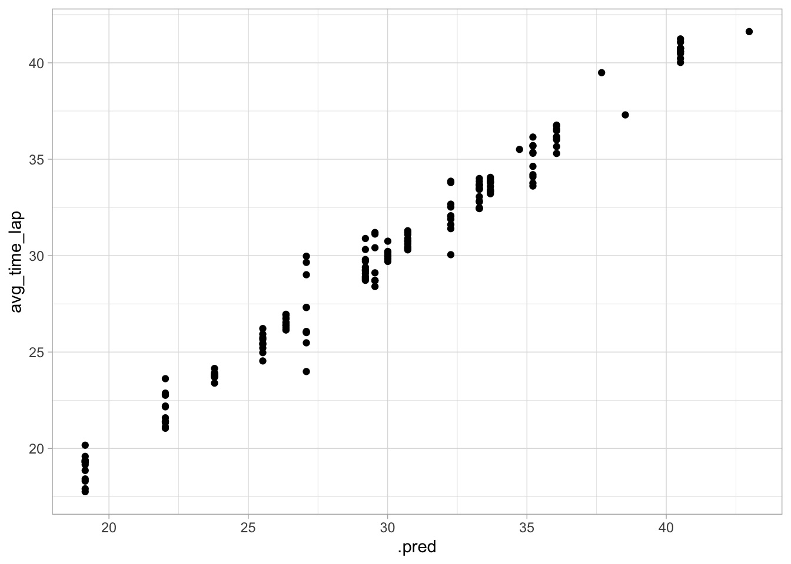
## Plot residuals vs fitted
aug_best_spline %>%
mutate(resid = avg_time_lap - .pred) %>%
ggplot(aes(x = .pred, y = resid)) +
geom_point()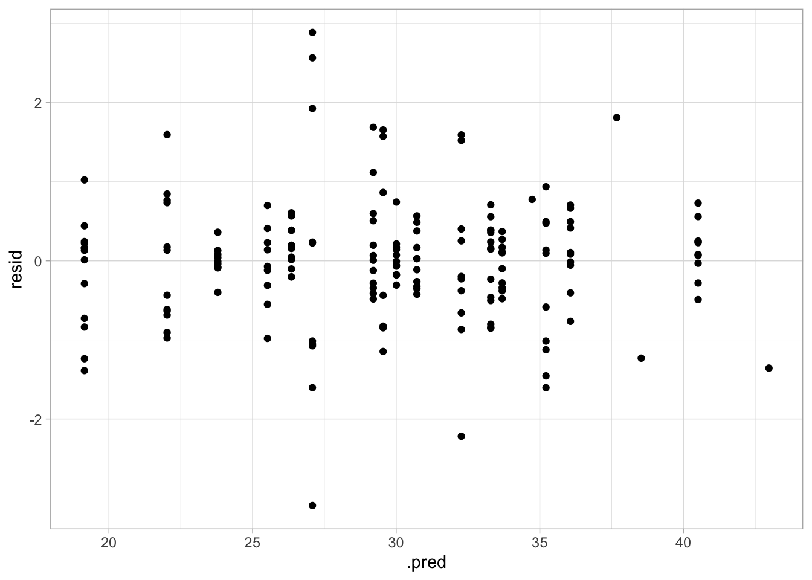
This model seems to have decent performance. The RMSE is much lower than in the null model, the plot of the actual vs predicted value shows pretty similar values, and there doesn’t appear to be any nonconstant variance.
Tree
For the tree model, I will follow the same steps as above:
- Create model specification
- Create a workflow
- Create a tuning grid
- Tune the hyperparameters
- Autoplot the results
- Finalize the workflow
- Fit the model to the training data
- Estimate model performance with RMSE
- Make diagnostic plots
# Create model spec
decision_tree_rpart_spec <-
decision_tree(tree_depth = tune(),
min_n = tune(),
cost_complexity = tune()) %>%
set_engine('rpart') %>%
set_mode('regression')
# Create workflow
tree_wflow <- workflow() %>%
add_model(decision_tree_rpart_spec) %>%
add_recipe(lap_rec)
# Create tuning grid
tree_grid <- grid_regular(parameters(decision_tree_rpart_spec))
# Tune hyperparameters
tree_res <- tree_wflow %>%
tune_grid(resamples = cv5,
grid = tree_grid,
metrics = metric_set(rmse),
control = control_grid(verbose = TRUE))
# Autoplot results
tree_res %>% autoplot()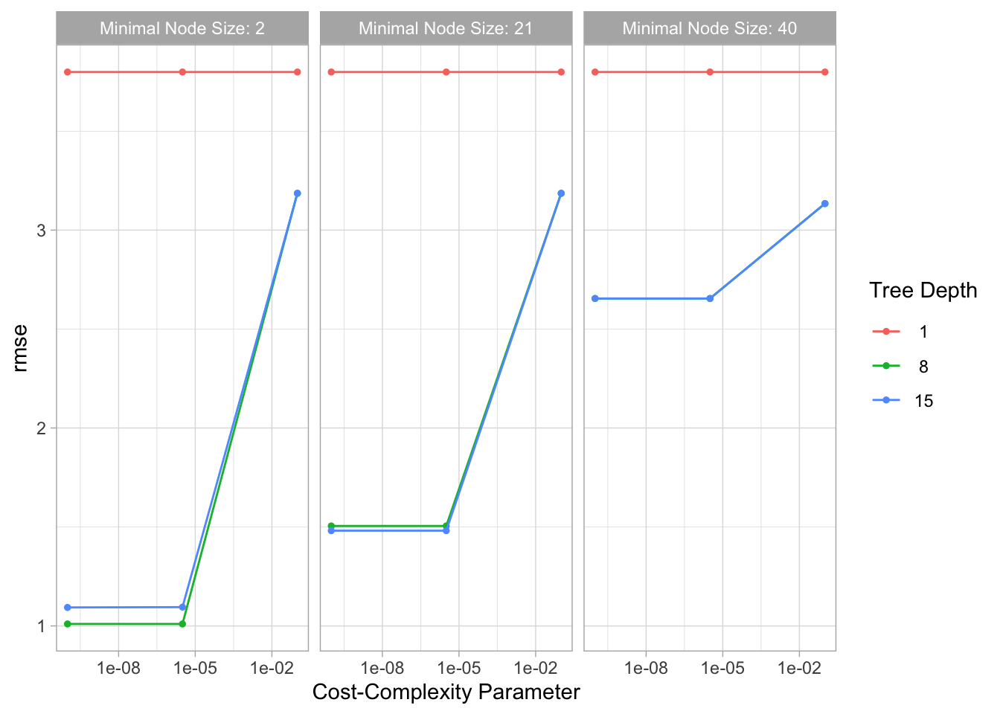
# Finalize workflow
best_tree <- tree_res %>% #select best hyperparameter combination
select_best()
best_tree_wflow <- tree_wflow %>%
finalize_workflow(best_tree)
# Fit to training data
best_tree_wflow_fit <- best_tree_wflow %>%
fit(data = train_data)
# Estimate model performance with RMSE
aug_best_tree <- augment(best_tree_wflow_fit, new_data = train_data)
tree_rmse <-
aug_best_tree %>%
rmse(truth = avg_time_lap, .pred) %>%
mutate(model = "Tree")
gt::gt(tree_rmse)| .metric | .estimator | .estimate | model |
|---|---|---|---|
| rmse | standard | 0.4635262 | Tree |
# Diagnostic plots
## Plot actual vs predicted
ggplot(data = aug_best_tree, aes(x = .pred, y = avg_time_lap)) +
geom_point()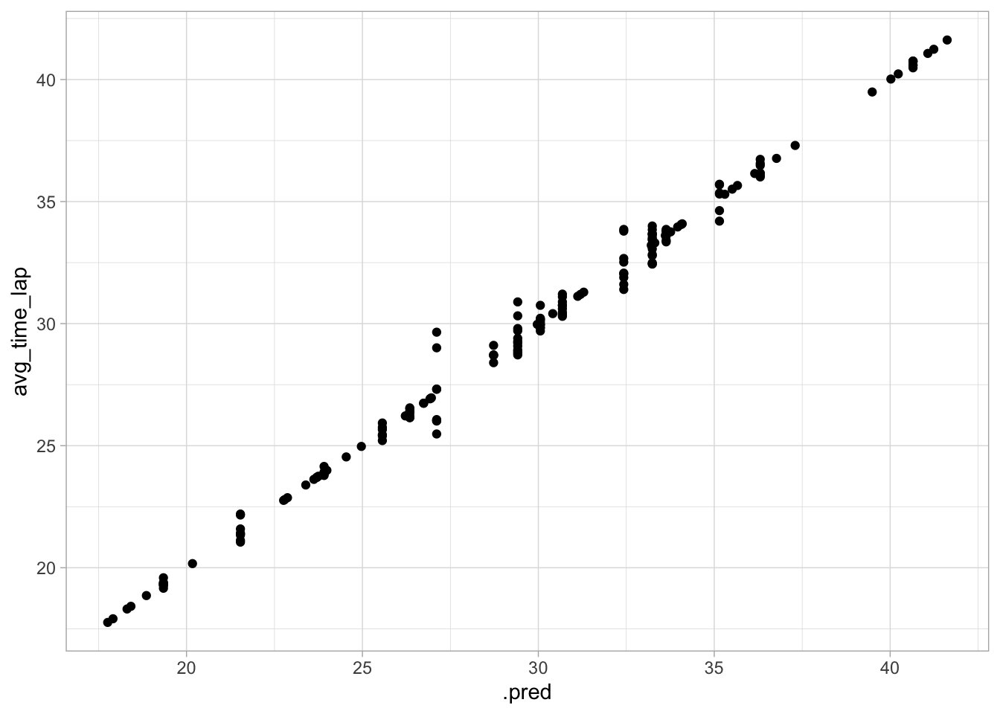
## Plot residuals vs fitted
aug_best_tree %>%
mutate(resid = avg_time_lap - .pred) %>%
ggplot(aes(x = .pred, y = resid)) +
geom_point()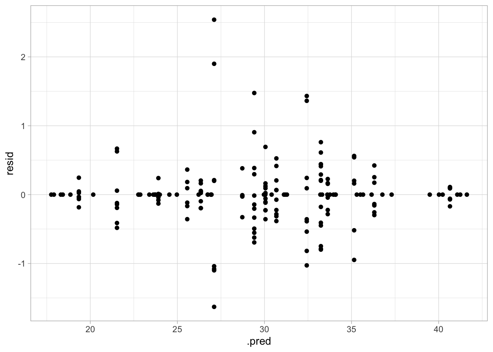
This model seems to perform even better than the spline model. The RMSE is lower and the plot of actual vs predicted values has even less variance. However, the plot of residuals vs predicted values does seem to have nonconstant variance, with increased variance towards the center.
Random Forest
# Model spec
rand_forest_ranger_spec <-
rand_forest(mtry = tune(), min_n = tune()) %>%
set_engine('ranger') %>%
set_mode('regression')
# Create workflow
forest_wflow <- workflow() %>%
add_model(rand_forest_ranger_spec) %>%
add_recipe(lap_rec)
# Create tuning grid and tune hyperparameters
forest_res <- forest_wflow %>%
tune_grid(resample = cv5,
grid = 25,
metrics = metric_set(rmse),
control = control_grid(save_pred = T, verbose = T))
# Autoplot results
forest_res %>% autoplot()
# Finalize workflow
best_forest <- forest_res %>% #select best hyperparameter combination
select_best()
best_forest_wflow <- forest_wflow %>%
finalize_workflow(best_forest)
# Fit to training data
best_forest_wflow_fit <- best_forest_wflow %>%
fit(data = train_data)
# Estimate model performance with RMSE
aug_best_forest <- augment(best_forest_wflow_fit, new_data = train_data)
forest_rmse <-
aug_best_forest %>%
rmse(truth = avg_time_lap, .pred) %>%
mutate(model = "Random Forest")
gt::gt(forest_rmse)| .metric | .estimator | .estimate | model |
|---|---|---|---|
| rmse | standard | 0.5349432 | Random Forest |
# Diagnostic plots
## Plot actual vs predicted
ggplot(data = aug_best_forest, aes(x = .pred, y = avg_time_lap)) +
geom_point()
## Plot residuals vs fitted
aug_best_forest %>%
mutate(resid = avg_time_lap - .pred) %>%
ggplot(aes(x = .pred, y = resid)) +
geom_point()
This model appears to be a good medium between the previous two. The RMSE is between the previous two, the actual vs predicted plot looks good, and the variance seems more constant.
SVM
# Model spec
svm_poly_kernlab_spec <-
svm_poly(cost = tune(),
degree = tune(),
scale_factor = tune(),
margin = tune()) %>%
set_engine('kernlab') %>%
set_mode('regression')
# Create workflow
svm_wflow <- workflow() %>%
add_model(svm_poly_kernlab_spec) %>%
add_recipe(lap_rec)
# Create tuning grid
svm_grid <- grid_regular(parameters(svm_poly_kernlab_spec))
# Tune hyperparameters
svm_res <- svm_wflow %>%
tune_grid(resamples = cv5,
grid = svm_grid,
metrics = metric_set(rmse),
control = control_grid(verbose = TRUE))
# Autoplot results
svm_res %>% autoplot()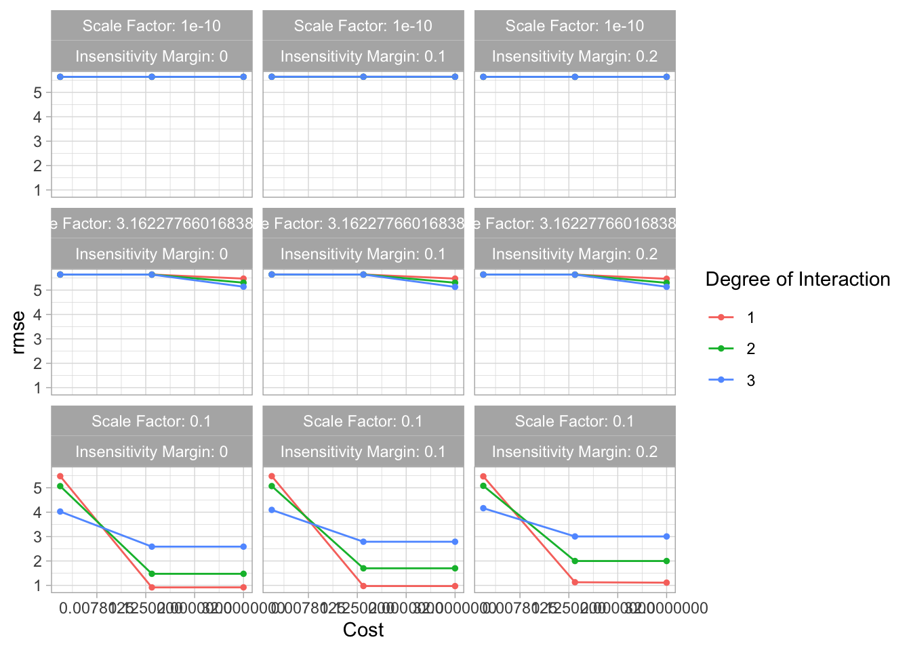
# Finalize workflow
best_svm <- svm_res %>% #select best hyperparameter combination
select_best()
best_svm_wflow <- svm_wflow %>%
finalize_workflow(best_svm)
# Fit to training data
best_svm_wflow_fit <- best_svm_wflow %>%
fit(data = train_data)
# Estimate model performance with RMSE
aug_best_svm <- augment(best_svm_wflow_fit, new_data = train_data)
svm_rmse <-
aug_best_svm %>%
rmse(truth = avg_time_lap, .pred) %>%
mutate(model = "SVM")
gt::gt(svm_rmse)| .metric | .estimator | .estimate | model |
|---|---|---|---|
| rmse | standard | 0.737959 | SVM |
# Diagnostic plots
## Plot actual vs predicted
ggplot(data = aug_best_svm, aes(x = .pred, y = avg_time_lap)) +
geom_point()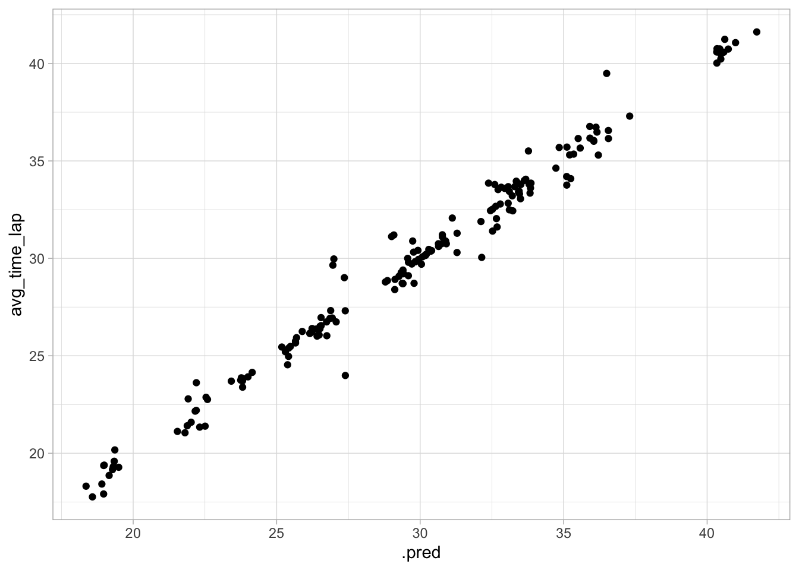
## Plot residuals vs fitted
aug_best_svm %>%
mutate(resid = avg_time_lap - .pred) %>%
ggplot(aes(x = .pred, y = resid)) +
geom_point()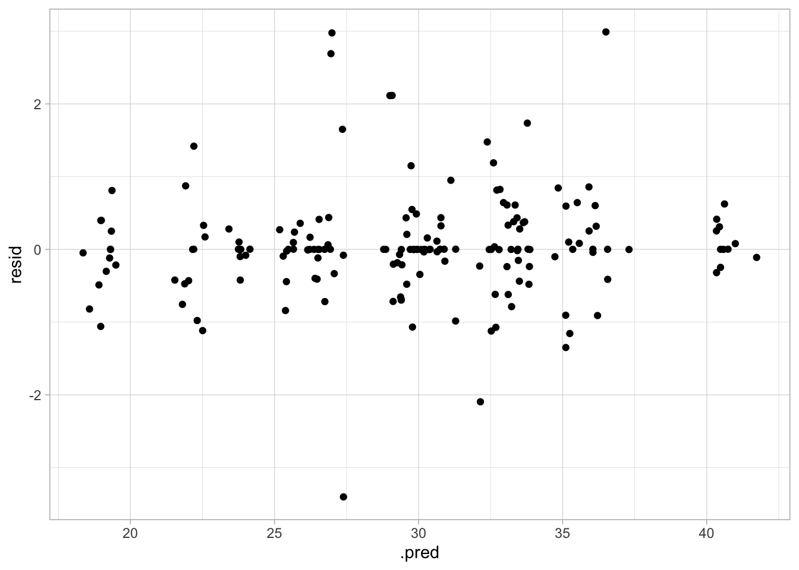
The diagnostic plots here look good, but the RMSE is higher than the last couple of models, so this may not be the best option.
Model Selection
Before deciding on my final model, I want to look at the RMSEs of all the models again.
# View RMSEs of all models
knitr::kable(rbind(null_rmse, spline_rmse, tree_rmse, forest_rmse, svm_rmse))| .metric | .estimator | .estimate | model |
|---|---|---|---|
| rmse | standard | 5.6343032 | Null Model |
| rmse | standard | 0.7705589 | Spline |
| rmse | standard | 0.4635262 | Tree |
| rmse | standard | 0.5349432 | Random Forest |
| rmse | standard | 0.7379590 | SVM |
If I base my decision solely on the RMSE, the best model would the tree model. However, I think I want to go with the random forest. The RMSE is not all that different between the two, and the diagnostic plots looked better for the random forest.
Final Model
It’s time to fit the final model and see how it performs! I’ll use the same metric and diagnostic plots I’ve been using the whole time.
# Final workflow
forest_final <- best_forest_wflow %>%
last_fit(data_split, metrics = metric_set(rmse))
# Include predicted probabilities
aug_final_forest <- augment(forest_final)
# Estimate model performance with RMSE
forest_final %>%
collect_metrics() %>%
select(-.config) %>%
gt::gt()| .metric | .estimator | .estimate |
|---|---|---|
| rmse | standard | 0.7685735 |
# Make diagnostic plots
## Plot actual vs fitted
ggplot(data = aug_final_forest, aes(x = .pred, y = avg_time_lap)) +
geom_point()
## Plot residuals vs fitted
aug_final_forest %>%
mutate(resid = avg_time_lap - .pred) %>%
ggplot(aes(x = .pred, y = resid)) +
geom_point()
This performance isn’t too bad. As expected, the RMSE is higher than in the training model, but it’s not astronomical, and the diagnostic plots still look pretty good! Fitted and predicted values are similar, and there doesn’t seem to be nonconstant variance.
Discussion
This was an interesting exercise, and great practice in a start-to-finish analysis. We started with unprocessed data, cleaned and explored it, determined a question, fit multiple models to training data to determine the best one, and fit the test data to the final model. I was surprised at how well all the models fit, particularly when I went in (and honestly, finished) with so little understanding of the data. The random forest seemed to do a good job of predicting the outcome in both the train and test data. I wish this data set came with more information about factors like track materials, angle/amount of decline in the track, and anything else that may have impacted the speed. I think we could have done some more with that information, but overall, I was pleasantly surprised by the results of this exercise!